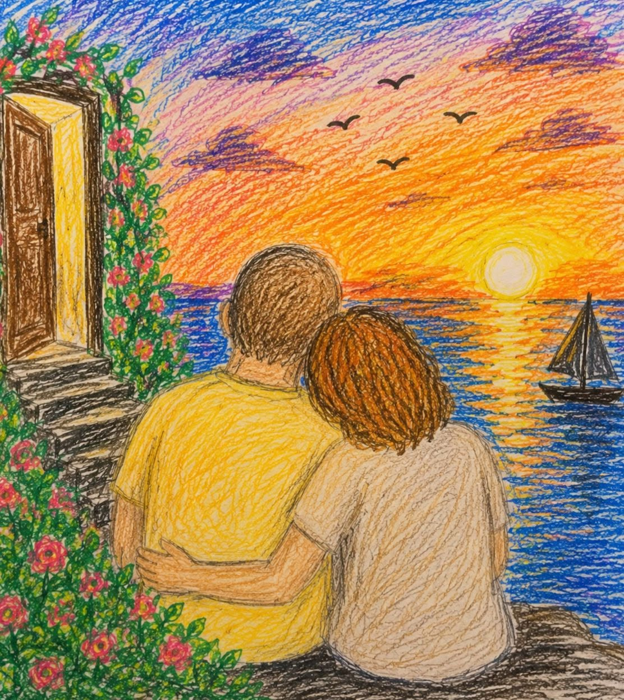

Renaissance
Tu es venue comme une lumière
dans une chambre oubliée,
et soudain mes ombres
ont cessé de trembler.
J’ai longtemps marché sans demeure,
portant mes rêves comme des valises,
jusqu’au jour où ta présence
a ressemblé à une porte ouverte.
Je suis entré dans ton amour
comme on entre dans la mer,
avec la peur de perdre pied
et l’envie secrète de plonger.
J’avais des blessures anciennes
que le temps n’avait pas guéries.
Puis tu es arrivée doucement,
sans demander pourquoi je souffrais.
Mon cœur était une chambre fermée,
sans soleil,
sans matin,
où je gardais mes rêves
loin du bruit des lendemains.
J’avais appris à suivre les routes,
à ne jamais perdre le nord,
à croire que savoir où aller
était la manière de vivre encore.
Tu n’as pas crié ton arrivée,
tu n’as rien brûlé autour de moi.
Tu as simplement posé ton regard
là où mon cœur dormait.
Nous étions deux rivières
nées de montagnes différentes,
portant chacune ses blessures,
ses détours et ses silences.
Je croyais être arrivé au bout
de mes printemps
et de mes rêves.
Mon cœur connaissait l’hiver
et ne demandait plus rien au soleil.
Il y a dans tes yeux
quelque chose qui me désarme,
comme si j’y reconnaissais
un secret oublié de mon âme.
Je te regarde
et le monde perd ses contours.
Je ne sais plus où finit le rêve,
ni où commence l’amour.
Tu es apparue,
et quelque chose en moi est né.
Une tendresse oubliée,
un désir que je croyais perdu.
Nos cours se sont croisés,
et nous avons cessé de résister.
Je ne sais plus où commence ton courant,
ni où finit le mien.
Quelque chose s’est embrasé,
une flamme ancienne
et oubliée,
celle des désirs que je croyais morts,
des rêves que j’avais enterrés.
Tu as croisé mon chemin,
tout s’est mis à tourner.
Ma raison cherchait une direction,
mon cœur voulait seulement rester.
Ton regard a frappé à la vitre,
et j’ai ouvert sans savoir pourquoi.
L’air du dehors était différent,
parce qu’il portait quelque chose de toi.
Tu n’as pas effacé mes cicatrices,
tu leur as simplement donné des fleurs.
Et ce que je croyais être une faiblesse
est devenue la plus belle partie de mon cœur.
Tes yeux étaient l’horizon,
ton sourire,
une vague douce,
et mon cœur,
pauvre navigateur,
a oublié le chemin du retour.
Dans tes bras,
je n’ai plus cherché refuge.
Il suffisait de ton sourire
pour que le monde devienne moins lourd.
Je croyais mon cœur éteint,
habitué au silence et au froid,
mais ton regard a rallumé
une étoile au fond de moi.
Même la nuit
porte un peu de ton éclat,
car l’amour est cette lumière
qui apprend à l’ombre à respirer.
L’amour n’a ni murs
ni fenêtres,
mais il sait protéger du froid :
c’est une maison invisible
où deux solitudes cessent d’avoir froid.
Je ne cherche plus le rivage.
Je préfère me perdre en toi,
car l’amour est une mer immense
où deux âmes apprennent à nager.
L’amour ne supprime pas toujours la douleur ;
parfois,
il la transforme en beauté,
comme une cicatrice
qui,
au lieu de faire mal,
se met à fleurir.
Tu es là,
mes murs ne me retiennent plus.
L’amour est une fenêtre ouverte
dans une chambre longtemps fermée.
J’ai compris alors
qu’on peut se perdre merveilleusement,
quand quelqu’un devient
le lieu où l’on voulait arriver.
L’amour est un incendie silencieux :
il ne fait pas toujours de fumée,
mais il transforme en lumière
tout ce qu’il touche.
Aimer, c'est :
ne plus demander qui donne ou reçoit,
mais avancer ensemble
vers le même océan.
Tu n’as pas changé mon passé,
tu as simplement ouvert mon avenir.
Car certains amours
sont des secondes naissances.
Aimer, c’est :
Accepter ce vertige,
et découvrir dans les yeux de l’autre
une part de soi que l’on ignorait.
Djamel Metref
At Yenni le 5 septembre 2026
← Tous les poèmes
Renaissance
Amour et désir · Résilience et espoir